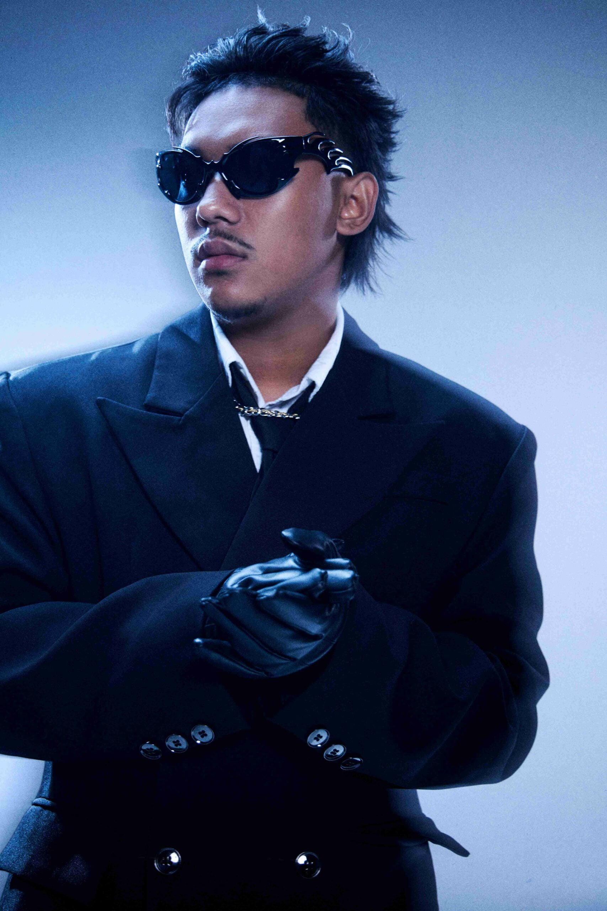

SARAN (ชื่อจริง: โอม สรัล มณีโชติ) เป็นแร็ปเปอร์ไทยสายเลือดใหม่ที่เริ่มสนใจดนตรีตั้งแต่เด็ก จากการเรียนร้องเพลงกับคุณพ่อ และเริ่มทำเพลงด้วยตัวเองตั้งแต่อายุยังน้อย เขาเคยเข้าร่วมการแข่งขันแร็ปต่าง ๆ ก่อนจะไปถึงรายการใหญ่อย่าง The Rapper 2 และคว้าแชมป์ The Rapper 2020: Civil War เมื่ออายุเพียง 15 ปี ซึ่งทำให้เขาเป็นที่รู้จักในวงการฮิปฮอปไทย หลังจากนั้น SARAN ปล่อยผลงานเพลงของตัวเองที่ได้รับความนิยมสูง มีสไตล์การเขียนไรม์ที่คม และสามารถสื่อสารความรู้สึกผ่านเนื้อเพลงได้อย่างลึกซึ้ง ทำให้ช่องและผลงานของเขามียอดชมเป็นล้านวิวทั่วประเทศ
